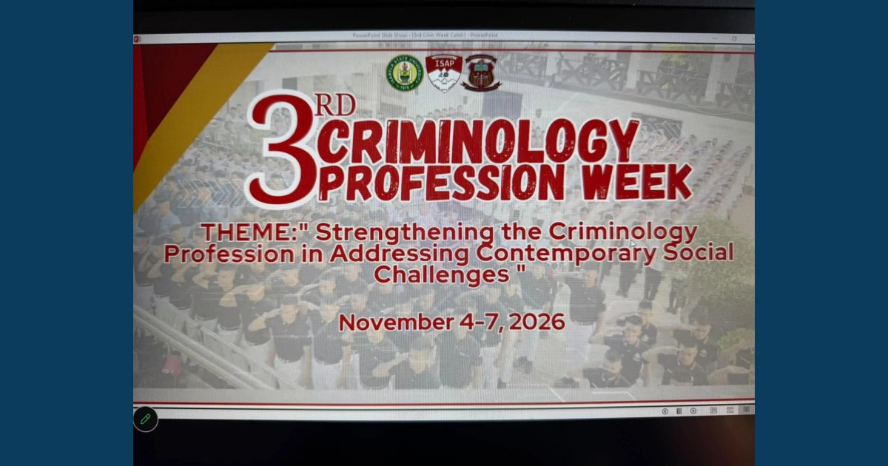

CoCJE–ISAP, ISU–Cabagan, and RDC Forge Research Collaboration at 3rd Criminology Profession Week

Dr. Ryan C. Fontanilla, MCNP–ISAP Research Director, served as a panel reactor during research presentations at ISAP’s 3rd Criminology Profession Week on November 05, 2026.
Read full article